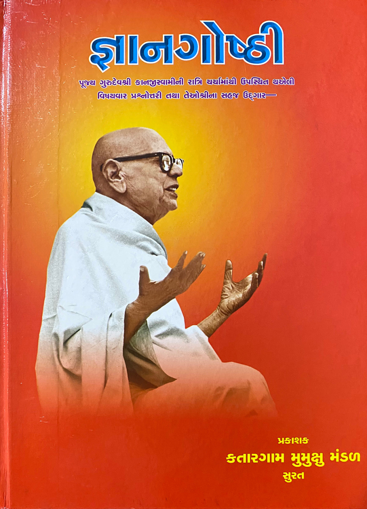

Gyangoshti
91 sittings, in 10 runs
- 19 published
- 72 recorded, not published
Question 121 · 2 sittings · 2001
| Part | Date | Reference | Length | Recording |
|---|
| 30 April 2001 | Question 121 | | Recorded, not published |
| 1 May 2001 | Question 121 | | Recorded, not published |
Question 44 · 2 sittings · 2001
| Part | Date | Reference | Length | Recording |
|---|
| 1 | 11 May 2001 | Question 44 | | Recorded, not published |
| 2 | 12 May 2001 | Question 44 | | Recorded, not published |
Question 68 · 2 sittings · 2001
| Part | Date | Reference | Length | Recording |
|---|
| 27 May 2001 | Question 68 | | Recorded, not published |
| 28 May 2001 | Question 68 | | Recorded, not published |
Question 275 · 3 sittings · 2001
Question 344 · 2 sittings · 2001
| Part | Date | Reference | Length | Recording |
|---|
| 27 June 2001 | Question 344 | | Recorded, not published |
| 28 June 2001 | Question 344 | | Recorded, not published |
Question 354 · 2 sittings · 2001
| Part | Date | Reference | Length | Recording |
|---|
| 2 July 2001 | Question 354 | | Recorded, not published |
| 3 July 2001 | Question 354 | | Recorded, not published |
Question 532 · 5 sittings · 2002
Bol 542 · 2 sittings · 2002
Bol 184 · 2 sittings · 2002
Other sittings · 69 sittings
| Part | Date | Reference | Length | Recording |
|---|
| 5 November 1998 | Gurudev ke Vachnamrut 407 | 58 min | Video |
| 1 | 20 January 1999 | Question 193 | 61 min | Video |
| 8 May 2000 | Question 41 | 36 min | Video |
| 30 December 2000 | Question 10 | | Recorded, not published |
| 11 April 2001 | Question 9 | | Recorded, not published |
| 12 April 2001 | Question 12 | | Recorded, not published |
| 13 April 2001 | Question 35 | | Recorded, not published |
| 14 April 2001 | Question 91 | | Recorded, not published |
| 15 April 2001 | Question 92 | | Recorded, not published |
| 16 April 2001 | Question 93 | | Recorded, not published |
| 17 April 2001 | Question 94 | | Recorded, not published |
| 18 April 2001 | Question 96 | | Recorded, not published |
| 19 April 2001 | Question 98 | | Recorded, not published |
| 20 April 2001 | Question 102 | | Recorded, not published |
| 21 April 2001 | Question 107 | | Recorded, not published |
| 22 April 2001 | Question 108 | | Recorded, not published |
| 23 April 2001 | Question 110 | | Recorded, not published |
| 24 April 2001 | Question 115 | | Recorded, not published |
| 27 April 2001 | Question 116 | | Recorded, not published |
| 28 April 2001 | Question 117 | | Recorded, not published |
| 29 April 2001 | Question 119 | | Recorded, not published |
| 2 May 2001 | Question 122 | | Recorded, not published |
| 3 May 2001 | Question 125 | | Recorded, not published |
| 4 May 2001 | Question 145 | | Recorded, not published |
| 5 May 2001 | Question 146 | | Recorded, not published |
| 7 May 2001 | Question 40 | | Recorded, not published |
| 8 May 2001 | Question 41 | | Recorded, not published |
| 9 May 2001 | Question 42 | | Recorded, not published |
| 10 May 2001 | Question 43 | | Recorded, not published |
| 13 May 2001 | Question 45 | | Recorded, not published |
| 14 May 2001 | Question 46 | | Recorded, not published |
| 15 May 2001 | Question 601 | | Recorded, not published |
| 16 May 2001 | Question 602 | | Recorded, not published |
| 17 May 2001 | Question 605 | | Recorded, not published |
| 18 May 2001 | Question 607 | | Recorded, not published |
| 19 May 2001 | Question 608 | | Recorded, not published |
| 21 May 2001 | Question 609 | | Recorded, not published |
| 22 May 2001 | Question 614 | | Recorded, not published |
| 23 May 2001 | Question 56 | | Recorded, not published |
| 24 May 2001 | Question 64 | | Recorded, not published |
| 25 May 2001 | Question 65 | | Recorded, not published |
| 26 May 2001 | Question 66 | | Recorded, not published |
| 29 May 2001 | Question 71 | | Recorded, not published |
| 30 May 2001 | Question 73 | | Recorded, not published |
| 31 May 2001 | Question 77 | | Recorded, not published |
| 1 June 2001 | Question 188 | | Recorded, not published |
| 2 June 2001 | Question 165 | | Recorded, not published |
| 3 June 2001 | Question 210 | | Recorded, not published |
| 4 June 2001 | Question 271 | | Recorded, not published |
| 5 June 2001 | Question 213 | | Recorded, not published |
| 16 June 2001 | Question 214 | | Recorded, not published |
| 17 June 2001 | Question 216 | | Recorded, not published |
| 18 June 2001 | Question 244 | | Recorded, not published |
| 19 June 2001 | Question 238 | | Recorded, not published |
| 20 June 2001 | Question 224 | | Recorded, not published |
| 26 June 2001 | Question 342 | | Recorded, not published |
| 29 June 2001 | Question 345 | | Recorded, not published |
| 30 June 2001 | Question 346 | | Recorded, not published |
| 1 July 2001 | Question 351 | | Recorded, not published |
| 4 July 2001 | Question 355 | | Recorded, not published |
| 28 July 2001 | Question 68 | | Recorded, not published |
| 10 March 2002 | Bol 529 | | Video |
| 4 May 2002 | Bol 535; 536; 537 | 57 min | Video |
| 5 May 2002 | Bol 540 | 59 min | Video |
| 9 May 2002 | Bol 547 | 64 min | Video |
| 10 May 2002 | Bol 548 | 47 min | Video |
| 11 May 2002 | Bol 544 | 53 min | Video |
| 1 | 30 July 2002 | Patrank 180 | 57 min | Video |
| 2 | 31 July 2002 | | 55 min | Video |